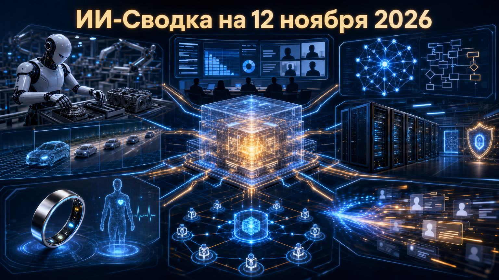

Повестка дня показывает, как ИИ одновременно становится рабочей средой, инструментом проверки критического ПО и компонентом реальных физических процессов. На стороне моделей главным сигналом стал широкий запуск Gemini 4 Carbon, а на стороне инфраструктуры и рынка — инвестиции в данные для постобучения, медицинские сервисы и мощности дата-центров.
Практический вывод для компаний: конкуренция всё меньше сводится к выбору одной LLM. Важнее становятся контуры внедрения — данные для оценки, интеграция в процессы, симуляция действий, формальная проверка и управляемые вычисления.
Anthropic представила набор новых функций Claude для корпоративной работы. Claude Meetings в beta подключается к Google Meet, помогает формировать планы и таймлайны по ходу разговора и использует сведения из подключённых рабочих приложений; Claude Whiteboards превращает обсуждения в визуальные планы, а Claude Sheets создаёт и редактирует таблицы.
Meetings на старте доступен пользователям Team и Enterprise, тогда как Whiteboards и Sheets разворачиваются для платных тарифов. Как сообщает TechCrunch, одновременно Claude Data, ранее Claude Dashboards, стал общедоступным. Это расширяет Claude от чат-интерфейса к набору связанных рабочих поверхностей, но эффективность новых сценариев пока заявлена самой компанией и не подтверждена независимыми измерениями.
Google DeepMind анонсировала Gemini Robotics 2.5 — vision-language-action модель, рассчитанную на восприятие среды, рассуждение и управление роботами. По данным компании, модель уже развёртывается у партнёров: в пилоте Apptronik и Mercedes-Benz гуманоид Apollo 2 комплектовал автомобильные детали с заявленной успешностью 96%.
В официальном анонсе Google DeepMind также говорится об испытаниях более чем на 200 задачах и публикации ASIMOV-Jailbreak — открытого бенчмарка устойчивости роботов к небезопасным инструкциям. Результаты пилота и метрики производительности остаются данными разработчика и партнёров, однако сочетание промышленной демонстрации и отдельного safety-бенчмарка показывает переход physical AI от лабораторных тестов к более формализованному внедрению.
Mercor объявила Series D на $750 млн при оценке $20 млрд. В раунде участвовали Benchmark, Felicis, Apollo, General Catalyst, NVIDIA, Salesforce, Sapphire Ventures, StepStone, XTX Ventures и Zoom; компания также провела employee tender, не раскрыв его долю в общей сумме.
Как говорится в официальном сообщении Mercor, капитал пойдёт на инфраструктуру для evals, post-training и тренировочных сред, в которых агенты ИИ осваивают сложные рабочие процессы. Сделка подчёркивает, что дефицитным активом становятся не только GPU, но и качественные человеческие данные, проверочные контуры и среды для безопасного дообучения. При этом компания не раскрыла выручку, лид-инвестора и распределение привлечённых средств между первичным капиталом и выкупом акций сотрудников.
Google DeepMind показала AlphaProof Code — многоагентный фреймворк на базе Gemini Carbon для формализации свойств реального кода в Lean. В демонстрации система подготовила машинно проверяемые доказательства свойств реализации криптографического протокола Signal, то есть работала не только с абстрактной спецификацией.
Согласно публикации Google DeepMind, в проекте создано более шести миллионов строк Lean, а артефакты верификации опубликованы для внешней проверки. Это важный сдвиг от генерации кода к его проверяемой корректности: для криптографии, финансовых систем и критической инфраструктуры полезность модели определяется не убедительным объяснением, а доказательством. Масштаб трудозатрат, сравнение с ручной работой и независимый аудит результатов пока не раскрыты.
Google объявила о широком запуске Gemini 4 Carbon — своей флагманской модели для сложного программирования, научного рассуждения и многошаговых агентных задач. Платные разработчики и предприятия получают доступ через Gemini API и AI Studio, а подписчики Google AI Ultra — через Gemini app, AI Mode in Search и Antigravity.
В официальном анонсе Google также указан preview-команды /swarm в Antigravity для координации нескольких агентов. Это переводит модель из ограниченного доступа в массовые developer-, enterprise- и потребительские каналы. Заявления о качестве и производительности исходят от Google; пользователям стоит отдельно проверять стоимость, надёжность и контроль действий агентов в своих сценариях.
Institute of Foundation Models при MBZUAI выпустил PAN 2 — открытую world model, которая по изображению исходной сцены и текстовому описанию действия моделирует его последствия в видео. Разработчики опубликовали веса, код обучения и инференса, документацию и технические материалы по лицензии Apache 2.0.
Как следует из пресс-релиза IFM, PAN 2 создаёт ролики длительностью до 20 секунд и позиционируется для симулятивного рассуждения перед действиями агентов в физическом мире. Карточка модели на Hugging Face подтверждает Apache-2.0, text/image-to-video режимы и 29B-параметровый MMDiT backbone. Практическая ценность для робототехники ещё зависит от точности симуляции, стоимости запуска и переноса результатов в реальную среду, но открытость кода делает эти вопросы доступными для внешней проверки.
Oura объявила о покупке Counsel Health за $625 млн. Counsel сочетает медицинский ИИ-чат с возможностью подключить лицензированного врача, если автоматического ответа недостаточно; его сервис уже был интегрирован в приложение Oura в июне 2026 года.
По данным TechCrunch, после сделки Counsel продолжит работать с действующими и новыми корпоративными партнёрами, а CEO Muthu Alagappan и примерно 70 сотрудников перейдут в Oura. Это пример движения wearables-платформ от трекинга показателей к клиническим и корпоративным сервисам. Однако финансовые показатели Counsel, условия закрытия и устройство клинической ответственности публично не раскрыты; завершение сделки ожидается до конца 2027 года.
Минцифры обсудило практическую реализацию ранее известного требования о резервировании 10% площадей и мощностей коммерческих ЦОД. По данным источников отрасли, операторам могут дать до 24 часов на высвобождение ресурса после требования, а резерв потенциально разрешат считать суммарно по площадкам одного холдинга.
«Контекст» отмечает, что обсуждаемая механика касается ЦОД, оказывающих услуги по договорам, а не площадок для собственных нужд компаний. Для рынка ИИ это важное уточнение: GPU-облака и провайдеры вычислений должны учитывать резерв не только в планировании мощности, но и в клиентских контрактах. Параметры режима, тарифные последствия и окончательная нормативная процедура пока публично не раскрыты.